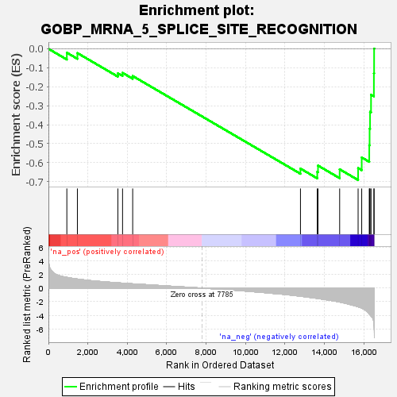
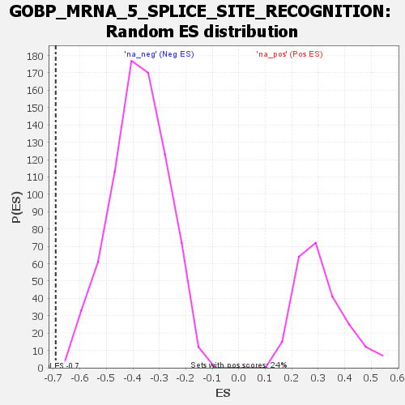

| | | Dataset | all_genes |
| Phenotype | NoPhenotypeAvailable |
| Upregulated in class | na_neg |
| GeneSet | GOBP_MRNA_5_SPLICE_SITE_RECOGNITION |
| Enrichment Score (ES) | -0.6914524 |
| Normalized Enrichment Score (NES) | -1.8342324 |
| Nominal p-value | 0.0 |
| FDR q-value | 0.043268103 |
| FWER p-Value | 0.883 |
Table: GSEA Results Summary

Fig 1: Enrichment plot: GOBP_MRNA_5_SPLICE_SITE_RECOGNITION
Profile of the Running ES Score & Positions of GeneSet Members on the Rank Ordered List

Fig 2: GOBP_MRNA_5_SPLICE_SITE_RECOGNITION: Random ES distribution
Gene set null distribution of ES for GOBP_MRNA_5_SPLICE_SITE_RECOGNITION